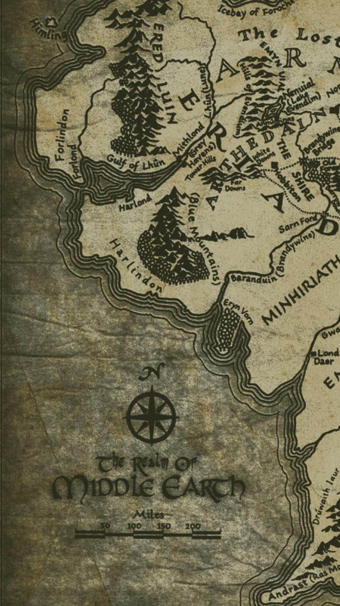

Frodo Bolseiro é um hobbit do Condado, que recebe de seu tio Bilbo um anel de rara beleza. Esse anel tem uma longa história: foi roubado de uma criatura chamada Gollum (como relatado no livro O Hobbit), e desde então tem sido guardado por Bilbo.
Gandalf, por vezes chamado Gandalf, o Cinzento, ou Gandalf, o Branco, é um personagem fictício das obras do autor, professor e filólogo britânico J. R. R. Tolkien. Gandalf é um Mago Istari, pertencente à raça dos Maiar, espíritos angelicais do mundo tolkieniano, e costumava andar com Nienna, com quem aprendeu a paciência e a compaixão (O Silmarillion), mas diz-se que era conselheiro de Irmo Lórien.
Saruman, o Branco, é um personagem fictício e antagonista da obra O Senhor dos Anéis, criado pelo professor e filólogo britânico J. R. R. Tolkien. Ele é o líder dos Istari, magos enviados à Terra Média em forma humana pelos divinos Valar para desafiar Sauron, o principal antagonista do romance.